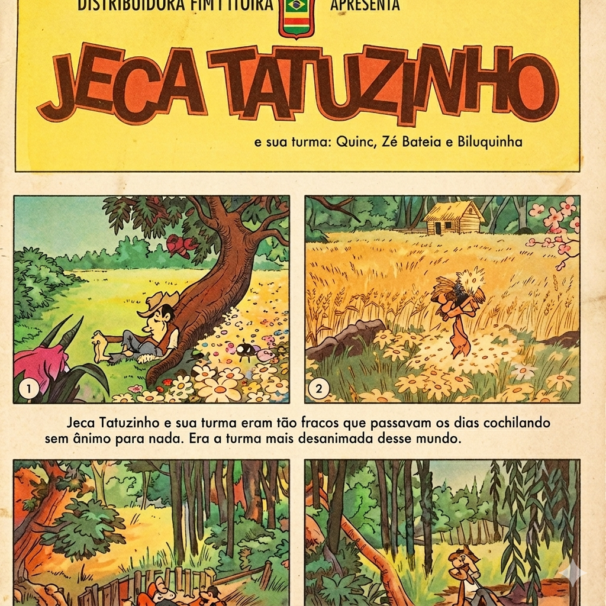
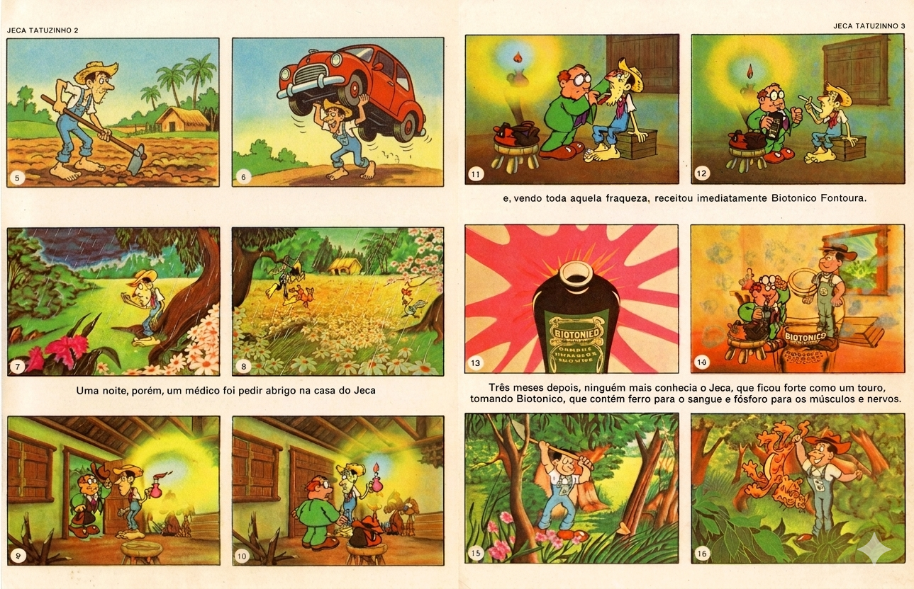
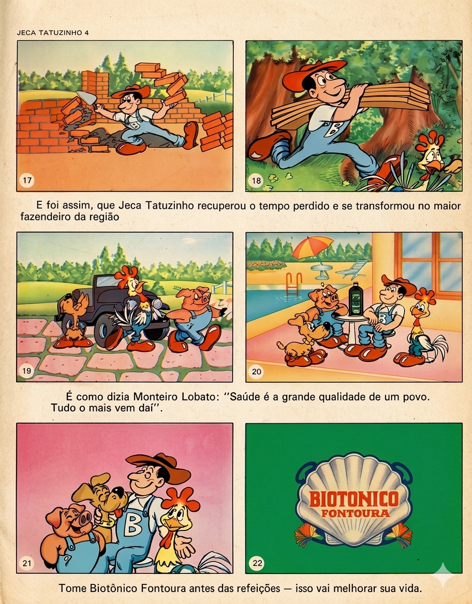

Galeria do Almanaque


Edição Histórica • 1970
O clássico almanaque ilustrado do Biotônico Fontoura
Jeca Tatuzinho e sua turma eram tão fracos que passavam os dias cochilando sem ânimo para nada.
Uma noite, porém, um médico foi pedir abrigo na casa do Jeca. Ao perceber toda aquela fraqueza, receitou imediatamente Biotônico Fontoura.
Três meses depois, ninguém mais conhecia o Jeca. Ele ficou forte como um touro.

O personagem vivia sem forças e desanimado.

Um médico oferece ajuda ao Jeca Tatuzinho.

Após o tratamento, Jeca se torna forte e trabalhador.
O personagem Jeca Tatu foi criado por Monteiro Lobato.
O almanaque foi usado como propaganda do Biotônico Fontoura.
O personagem virou símbolo da cultura popular brasileira.
Desenvolvido por:
Designer • Desenvolvedor • Autor do Site